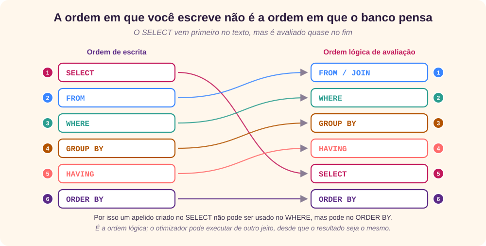
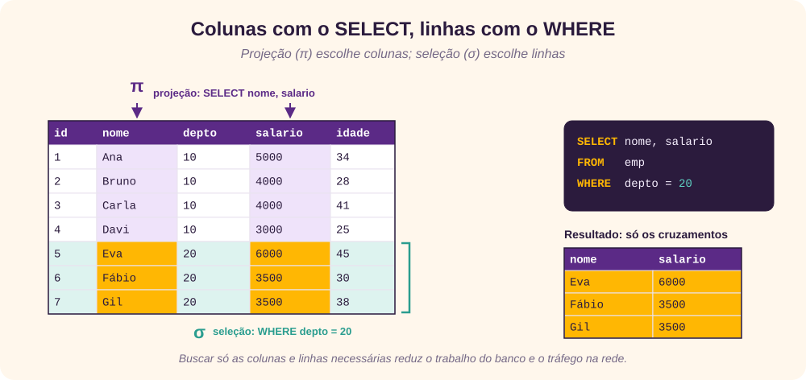
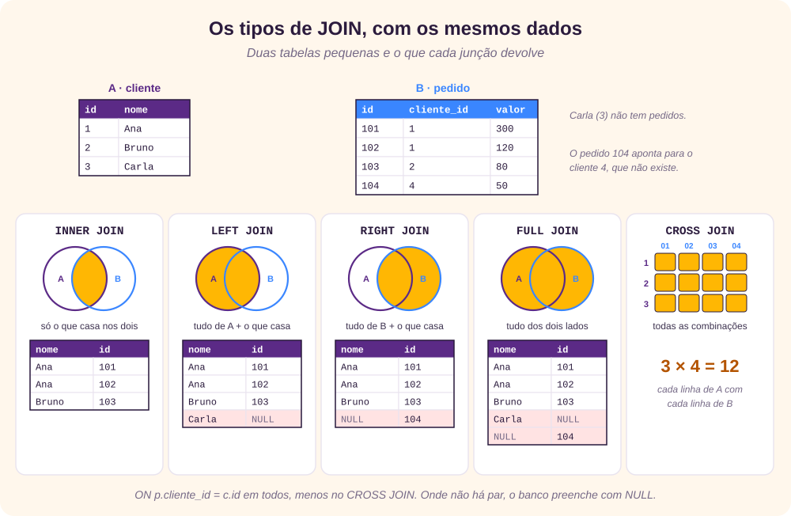
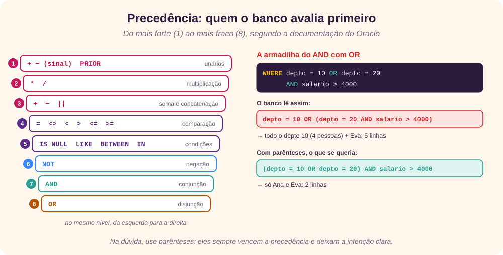
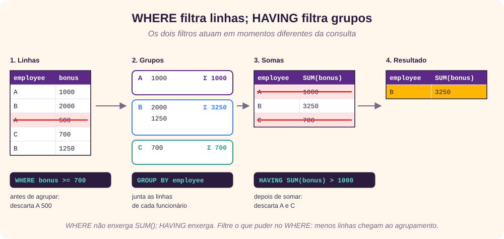
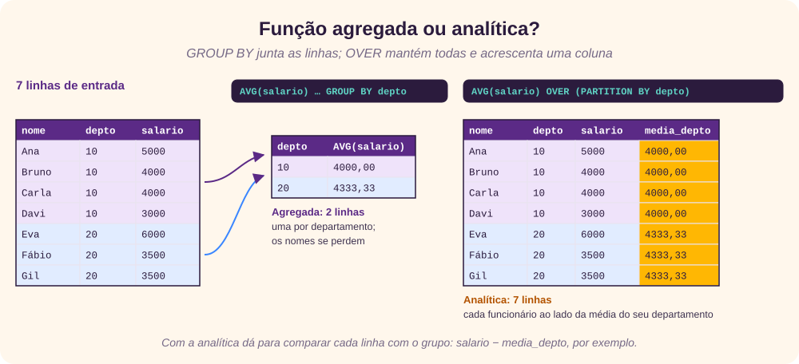
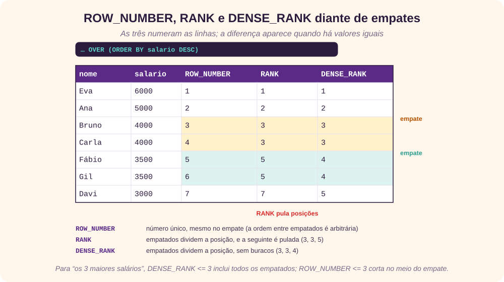
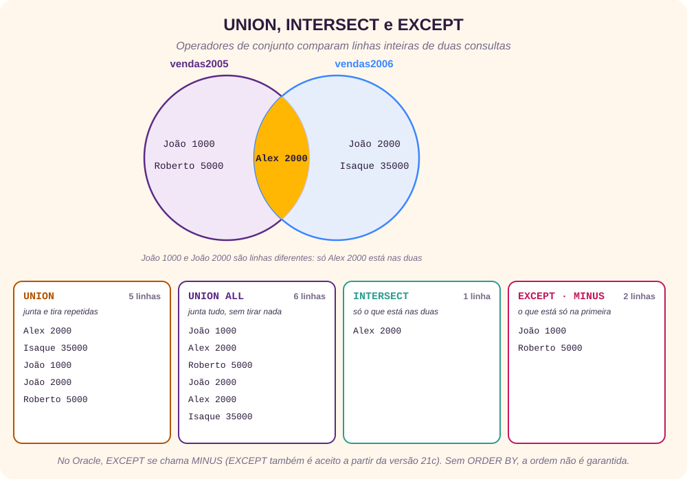
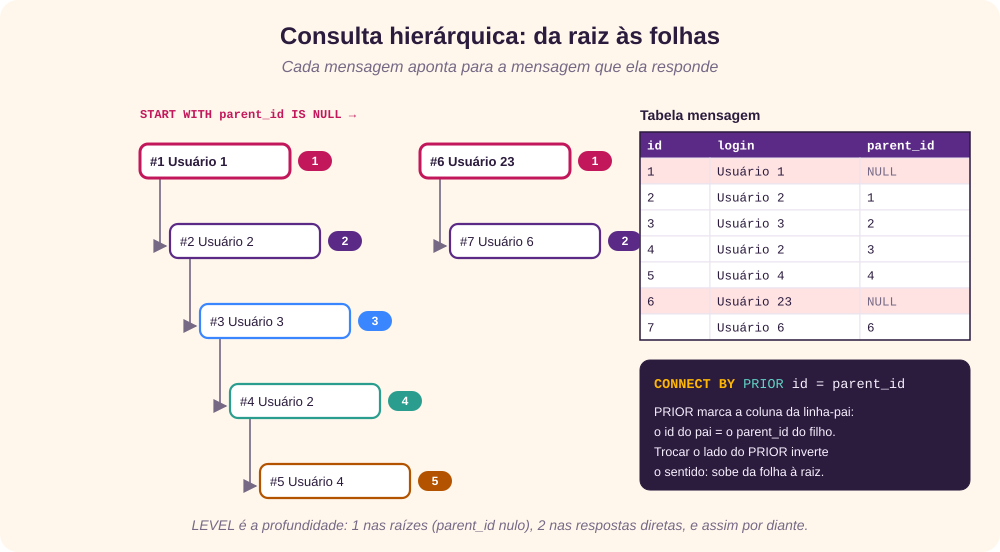

O que é SQL
O SQL (Structured Query Language) é a linguagem padrão dos bancos de dados relacionais. Ela é declarativa: você descreve o resultado que quer, e o banco decide como obtê-lo. Suas ideias vêm do modelo relacional que Edgar F. Codd publicou em 1970 e da álgebra relacional, que trata tabelas como conjuntos. [2] [3] [4]
A IBM criou a primeira versão nos anos 1970, e logo surgiram “dialetos” de outros fabricantes. Para organizá-los, o ANSI publicou um padrão em 1986 e a ISO, em 1987; desde então o padrão foi revisto várias vezes. Oracle, SQL Server, PostgreSQL, MySQL e SQLite seguem o núcleo do padrão, mas cada um tem extensões próprias. [2]
Os subconjuntos do SQL
Os comandos do SQL costumam ser divididos em grupos, conforme o que fazem. [5]
A tabela do original tem alguns erros de sintaxe nos exemplos da DML. Estas são as versões corrigidas:
| Comando | Exemplo | Correção |
|---|---|---|
INSERT | INSERT INTO pessoa (id, nome, sexo) VALUES (7, 'Aluno', 'M'); | É VALUES, não value; faltava fechar o parêntese; textos vão entre aspas simples (aspas duplas indicam nomes de colunas). |
SELECT | SELECT * FROM pessoa; | — |
UPDATE | UPDATE pessoa SET data_nascimento = DATE '1985-09-11' WHERE id = 7; | Uma data em texto, como '11/09/1985', depende da configuração regional do banco; o literal DATE 'AAAA-MM-DD' não. O original também usava id_pessoa numa tabela cuja coluna é id. |
DELETE | DELETE FROM pessoa WHERE id = 7; | Sem o WHERE, apaga a tabela inteira. |
Sobre transações: COMMIT torna as mudanças permanentes e ROLLBACK as desfaz desde o último COMMIT. No Oracle, uma transação começa sozinha no primeiro comando DML, e todo comando DDL faz um COMMIT implícito. [5]
A estrutura do SELECT
A sintaxe do original omite justamente a lista de colunas e tem colchetes desencontrados. A forma geral é: [6]
SELECT [DISTINCT] lista_de_colunas
FROM tabelas_e_junções
[WHERE condição_sobre_linhas]
[GROUP BY colunas_de_agrupamento]
[HAVING condição_sobre_grupos]
[ORDER BY colunas [ASC | DESC]]O DISTINCTROW citado no original só existe no MySQL, como sinônimo de DISTINCT. Repare que a ordem em que as cláusulas são escritas não é a ordem em que o banco as avalia:

O original descreve o SELECT como um recorte “horizontal” (as colunas) e “vertical” (as linhas escolhidas pelo critério). Na álgebra relacional, são a projeção e a seleção: [3]

Dica: “A perfeição não é alcançada quando não há mais nada a acrescentar, mas quando não há mais nada a retirar”, escreveu Saint-Exupéry (em Terra dos homens, e não em O pequeno príncipe, como diz o original). Em SQL: evite SELECT * e peça só as colunas de que precisa. Menos colunas significam menos dados lidos e transferidos e, às vezes, a chance de responder usando só um índice. [1]
Plano de execução
Antes de executar uma consulta, o otimizador do banco monta um plano de execução: em que ordem ler as tabelas, quais índices usar e como juntar os resultados. No Oracle, o plano aparece com EXPLAIN PLAN FOR seguido de SELECT * FROM TABLE(DBMS_XPLAN.DISPLAY), ou pelo botão de plano do SQL Developer. [7]
Três números guiam essas escolhas:
- Seletividade: a fração das linhas que passa por um filtro, de 0,0 (nenhuma) a 1,0 (todas).
- Cardinalidade: a estimativa de quantas linhas cada etapa devolve.
- Custo: a estimativa de recursos (leituras de disco, CPU, rede) de cada etapa.
Não aplique funções às colunas filtradas
Uma condição como WHERE TO_CHAR(data, 'YYYY') = '2026' obriga o banco a calcular a função em cada linha e impede o uso de um índice comum sobre data. Prefira transformar o valor, e não a coluna: WHERE data >= DATE '2026-01-01' AND data < DATE '2027-01-01'. Condições escritas assim são chamadas de sargable. [8] [34]
É o que o original recomenda para o JD Edwards, que guarda datas no formato juliano CYYDDD. Em vez de converter a coluna, converte-se a data de hoje: ixefff <= TO_CHAR(SYSDATE, 'YYYYDDD') - 1900000.
Tabela condutora
O original chama de drive table a tabela pela qual a consulta começa, em geral a mais restritiva. Nos otimizadores atuais, baseados em custo, essa escolha é automática e costuma ser boa quando as estatísticas estão em dia. Quando não é, o Oracle aceita dicas como /*+ LEADING(a) */, que devem ser a exceção, não a regra. [7]
Junções e apelidos
Uma junção (JOIN) combina linhas de duas tabelas por uma condição. A figura mostra os tipos principais sobre os mesmos dados. [9] [10]

O NATURAL JOIN, citado no original, junta automaticamente pelas colunas de mesmo nome. É prático, mas frágil: se alguém acrescentar uma coluna com um nome repetido, a junção muda sem aviso. Prefira escrever a condição com ON.
Junção explícita em vez de implícita
A forma antiga lista as tabelas separadas por vírgula e põe a condição de junção no WHERE. A forma explícita separa o que é junção (ON) do que é filtro (WHERE), o que deixa consultas grandes mais legíveis. No exemplo implícito do original falta o AND entre as duas condições, o que causa erro de sintaxe:
-- implícita (corrigida: faltava o AND)
SELECT a.iblitm, b.imdsc1
FROM proddta.f4102 a, proddta.f4101 b
WHERE b.imitm = a.ibitm
AND a.ibmcu = ' PRODCAN';
-- explícita
SELECT a.iblitm, b.imdsc1
FROM proddta.f4102 a
INNER JOIN proddta.f4101 b ON b.imitm = a.ibitm
WHERE a.ibmcu = ' PRODCAN';Os espaços em ' PRODCAN' não são erro: o JD Edwards guarda o código da filial alinhado à direita, com espaços à esquerda.
A César o que é de César: apelidos
Apelidos (aliases) dão nomes curtos a tabelas e colunas. Eles são obrigatórios quando a mesma tabela aparece duas vezes, como neste exemplo do original, que busca a descrição do kit e a do componente na mesma tabela de itens:
SELECT a.ixkitl,
b.imdsc1 AS desc_kit,
a.ixlitm,
c.imdsc1 AS desc_comp
FROM proddta.f3002 a
INNER JOIN proddta.f4101 b ON b.imitm = a.ixkit -- o item kit
INNER JOIN proddta.f4101 c ON c.imitm = a.ixitm -- o componente
WHERE a.ixtbm = 'M'
AND a.ixmmcu = ' PRODCAN'
AND a.ixkitl = '7415K00893F';Subconsultas, IN e EXISTS
Dividir para conquistar
Uma subconsulta é um SELECT dentro de outro. No FROM, ela funciona como uma tabela temporária: no exemplo do original, soma o estoque por item e filial antes da junção. [6]
SELECT a.iblitm, b.imdsc1, c.lipqoh
FROM proddta.f4102 a
INNER JOIN proddta.f4101 b ON b.imitm = a.ibitm
INNER JOIN (SELECT liitm, limcu, SUM(lipqoh) AS lipqoh
FROM proddta.f41021
GROUP BY liitm, limcu) c
ON c.liitm = a.ibitm AND c.limcu = a.ibmcu
WHERE a.ibmcu = ' PRODCAN';O original mostra que a mesma consulta, escrita com GROUP BY no nível de fora, teve custo e cardinalidade maiores naquele banco. Isso vale para aqueles dados e aquela versão do otimizador; a regra geral é conferir o plano das duas formas.
IN ou EXISTS?
O original cita um texto de 2007 segundo o qual o IN resolve primeiro a subconsulta e o EXISTS primeiro a consulta externa. Nos otimizadores atuais, os dois costumam ser transformados na mesma operação (uma semi-junção) e têm desempenho parecido. A diferença que realmente importa aparece na negação, quando há NULL: [13] [32]
-- clientes sem pedido; se algum pedido tiver cliente_id NULL…
SELECT nome FROM cliente
WHERE id NOT IN (SELECT cliente_id FROM pedido); -- …devolve zero linhas
SELECT nome FROM cliente c
WHERE NOT EXISTS (SELECT 1 FROM pedido p
WHERE p.cliente_id = c.id); -- devolve CarlaCom um NULL na lista, id NOT IN (1, 2, NULL) nunca é verdadeiro, porque comparar com NULL dá “desconhecido”. Para “não existe”, prefira NOT EXISTS.
Operadores e NULL
No original, os operadores aparecem em imagens de tabelas, em inglês. Aqui eles estão em texto; valem para o Oracle e, com pequenas variações, para os outros bancos: [11] [12]
| Tipo | Operadores | Exemplo |
|---|---|---|
| Aritméticos | + - * / | salario * 1.1 |
| Concatenação | || | nome || ' (' || depto || ')'; no SQL Server, + ou CONCAT() |
| Comparação | = <> != < > <= >= | salario >= 4000 |
| Condições | BETWEEN · IN · LIKE · IS NULL | nome LIKE 'A%' · depto IN (10, 20) |
| Lógicos | NOT · AND · OR | depto = 10 AND NOT salario < 3000 |

A tabela de precedência do original vem de material de treinamento e põe o BETWEEN num nível próprio, abaixo de IS NULL, LIKE e IN. A documentação atual do Oracle agrupa os quatro no mesmo nível, como na figura. Em nenhum dos dois casos isso muda o resultado de uma condição comum; a regra prática é a mesma: NOT, depois AND, depois OR. [11]
O NULL não é um valor
NULL significa “desconhecido”. Qualquer comparação com ele dá desconhecido, inclusive NULL = NULL, e o WHERE só deixa passar o que é verdadeiro. Para testar, use IS NULL e IS NOT NULL; para trocar um nulo por um valor, NVL (Oracle) ou COALESCE (padrão). [13]
Agregação: GROUP BY e HAVING
As funções agregadas (COUNT, SUM, AVG, MIN, MAX e outras) resumem várias linhas num só valor. Com GROUP BY, calculam um valor por grupo. Toda coluna do SELECT que não está dentro de uma agregação precisa estar no GROUP BY. [14]
WHERE ou HAVING?
O WHERE filtra linhas antes do agrupamento; o HAVING filtra grupos depois dele, e por isso pode usar agregações. [29]

SELECT employee, SUM(bonus)
FROM emp_bonus
GROUP BY employee
HAVING SUM(bonus) > 1000; -- A 1500 e B 3250O exemplo “errado” do original, … GROUP BY employee WHERE SUM(bonus) > 1000, falha por dois motivos: o WHERE vem antes do GROUP BY e não aceita agregações. Nos blocos de código do original também sobraram barras invertidas (emp\_bonus), restos da conversão do documento.
Além do GROUP BY simples
O original só indica um artigo sobre agrupamentos em várias dimensões. Em resumo, o Oracle e o padrão SQL oferecem: [15]
GROUP BY ROLLUP(depto): os totais por departamento e mais uma linha de total geral (16000, 13000 e 29000 nos dados deste tutorial).GROUP BY CUBE(a, b): os subtotais de todas as combinações deaeb.GROUP BY GROUPING SETS ((a), (b), ()): exatamente os agrupamentos listados.
A função GROUPING(coluna) devolve 1 nas linhas de subtotal, para distingui-las de um NULL real nos dados.
Ordem no caos
Sem ORDER BY, nenhum banco garante a ordem das linhas, nem mesmo com GROUP BY ou DISTINCT. Se a ordem importa, peça-a explicitamente; no Oracle, NULLS FIRST ou NULLS LAST decidem onde ficam os nulos. [6]
Funções analíticas
O original chama esta parte de “nível Jedi”, e com razão. Uma função analítica (ou de janela) calcula sobre um grupo de linhas, como uma agregada, mas não junta as linhas: cada linha continua no resultado, com o valor calculado ao lado. [16] [17] [33]

A marca de uma função analítica é a cláusula OVER, que tem três partes opcionais:
função(…) OVER (
PARTITION BY depto -- em que grupos calcular
ORDER BY admissao -- em que ordem, dentro do grupo
ROWS BETWEEN … -- quais linhas entram na conta (a janela)
)Funções analíticas só podem aparecer na lista do SELECT e no ORDER BY, porque são calculadas depois do WHERE, do GROUP BY e do HAVING. Para filtrar por elas, use uma subconsulta ou um WITH.
Numerar e classificar

Olhar as linhas vizinhas
O mesmo cuidado com a janela explica por que LAST_VALUE costuma “falhar”: com ORDER BY e sem moldura, a janela termina na linha atual, e o último valor é sempre o da própria linha (ou do último empatado com ela). Por isso o exemplo do original escreve ROWS BETWEEN UNBOUNDED PRECEDING AND UNBOUNDED FOLLOWING, que estende a janela à partição inteira.
Catálogo das funções do original
O original lista as funções analíticas do Oracle 11.2, cada uma com um exemplo agregado e outro analítico. Em resumo, com as correções encontradas: [16]
| Função | O que calcula | Observação |
|---|---|---|
AVG · SUM · COUNT · MIN · MAX | Média, soma, contagem, mínimo e máximo. | Com ORDER BY no OVER, viram acumuladas. |
ROW_NUMBER · RANK · DENSE_RANK | Posição da linha no grupo. | Veja a figura acima. |
NTILE(n) | Divide as linhas ordenadas em n faixas (4 = quartis). | No exemplo do original, o SELECT ficou comentado (--SELECT), e a consulta não roda. |
PERCENT_RANK · CUME_DIST | Posição relativa, de 0 a 1. | PERCENT_RANK começa em 0; CUME_DIST nunca é 0. |
LAG · LEAD | Valor de uma linha anterior ou seguinte. | O 2º argumento é a distância; o 3º, o valor padrão. |
FIRST_VALUE · LAST_VALUE | Primeiro e último valor da janela. | No 2º exemplo de FIRST_VALUE, o DESC fica no ORDER BY, não “no final do PARTITION BY”, e o apelido MENOR_SALARIO passa a mostrar o maior. |
FIRST · LAST (com KEEP) | Agregação só das linhas que ficam em primeiro ou último numa ordenação. | Sintaxe exclusiva do Oracle. |
LISTAGG | Concatena os valores de várias linhas num só texto. | O original diz que ela “transforma uma coluna em linhas”; é o contrário: várias linhas viram um texto. [19] |
RATIO_TO_REPORT | Fração de cada valor sobre o total da janela. | Exclusiva do Oracle; no padrão, x / SUM(x) OVER (). |
STDDEV · VARIANCE · VAR_POP · COVAR_* · CORR | Desvio padrão, variância, covariância e correlação de Pearson. | Funções estatísticas, agregadas ou analíticas. |
Outros detalhes dos exemplos do original: o comentário do LISTAGG escreve “LISTADD”; o exemplo de COUNT com RANGE BETWEEN 2000 PRECEDING AND 10000 FOLLOWING conta os empregados com salário entre o próprio salário menos 2000 e mais 10000. O SQLite, usado nos testes, não tem LISTAGG; o equivalente é GROUP_CONCAT. [18]
Operadores de conjunto
UNION, INTERSECT e EXCEPT combinam os resultados de duas consultas, comparando linhas inteiras. As duas consultas precisam ter o mesmo número de colunas, com tipos compatíveis; os nomes das colunas do resultado vêm da primeira. [20] [21]

UNIONelimina linhas repetidas, o que exige ordenar ou comparar tudo; quando se sabe que não há repetição,UNION ALLé mais rápido.- No exemplo do original, a segunda tabela tem colunas
personeamount, e nãopessoaequantia. Funciona, porque o que importa é a posição das colunas, mas é mais claro usar os mesmos nomes. - O texto do
EXCEPTdiz que a consulta retorna as linhas entre 1 e 100 “além de” as linhas entre 50 e 75. É o contrário: são as linhas entre 1 e 100 exceto as que estão entre 50 e 75. - No Oracle, o operador se chama
MINUS; a partir da versão 21c,EXCEPT,EXCEPT ALLeINTERSECT ALLtambém são aceitos. [21]
Onde não há EXCEPT, dá para obter o mesmo com um LEFT JOIN que mantém só as linhas sem par (WHERE o2.id IS NULL), como mostra o original, ou com NOT EXISTS.
Consultas hierárquicas
Quando cada linha aponta para uma linha-pai da mesma tabela (funcionário e chefe, mensagem e resposta, kit e componente), é preciso uma consulta que percorra a árvore. O exemplo do original é um fórum em que cada mensagem guarda em parent_id o id da mensagem que ela responde. [22] [31]

CONNECT BY, do Oracle
SELECT LEVEL AS nivel,
LPAD(' ', (LEVEL - 1) * 3, '-') || m.login || ': ' || m.texto AS mensagem
FROM mensagem m
START WITH m.parent_id IS NULL
CONNECT BY PRIOR m.id_mensagem = m.parent_id
ORDER SIBLINGS BY m.data_envio;START WITHdefine as raízes. O original usa uma subconsulta (id_mensagem IN (SELECT … WHERE parent_id IS NULL));parent_id IS NULLdiretamente faz o mesmo.CONNECT BY PRIORdefine a relação. O original afirma que o Oracle considera o lado esquerdo da igualdade como pai. Não é bem assim: quem indica o pai é o operadorPRIOR, que pode estar de qualquer lado.PRIOR id = parent_ideparent_id = PRIOR idsão idênticos; jáid = PRIOR parent_idinverte o sentido e sobe da folha para a raiz. [22]LEVELé a profundidade;ORDER SIBLINGS BYordena as respostas de um mesmo pai sem desmontar a árvore;SYS_CONNECT_BY_PATHeCONNECT_BY_ROOTdevolvem o caminho desde a raiz e a própria raiz.
Dois detalhes do script do original: TEXTO CLOB DEFAULT '' NOT NULL é contraditório no Oracle, que trata o texto vazio como NULL; e a “Tabela 2” diz ser o resultado da “listagem 2”, mas é o da listagem 3.
A forma padrão: WITH recursivo
O padrão SQL resolve o mesmo problema com um WITH recursivo, aceito pelo Oracle desde a versão 11g R2 e pelos demais bancos atuais. O original diz que o Oracle ainda não o implementava; isso mudou em 2009. Esta versão foi testada no SQLite: [23] [24]
WITH RECURSIVE arvore (id, login, texto, nivel) AS (
SELECT id, login, texto, 1
FROM mensagem WHERE parent_id IS NULL -- raízes
UNION ALL
SELECT m.id, m.login, m.texto, a.nivel + 1
FROM mensagem m JOIN arvore a ON m.parent_id = a.id -- filhos
)
SELECT * FROM arvore;No Oracle, escreve-se só WITH, sem a palavra RECURSIVE. O grande exemplo final do original usa CONNECT BY sobre a lista de materiais do JD Edwards e SYS_CONNECT_BY_PATH para multiplicar as quantidades de cada nível. Com o WITH recursivo, basta levar o produto acumulado numa coluna (a.qtd_acum * m.quantidade), sem as 23 colunas auxiliares.
WITH para consultas complexas
A cláusula WITH (em inglês, subquery factoring ou common table expression) dá nomes a subconsultas, que depois são usadas na consulta principal como se fossem tabelas. Isso deixa consultas longas legíveis e evita repetir a mesma subconsulta. [6] [24]
O exemplo do original não roda: faltam os parênteses em volta de cada subconsulta e as vírgulas entre elas, há um ponto e vírgula no meio do comando, e a subconsulta por loja usa SUM sem GROUP BY. Corrigido e testado:
WITH
sum_sales AS (
SELECT SUM(quantity) AS all_sales FROM sales
),
number_stores AS (
SELECT COUNT(*) AS nbr_stores FROM store
),
sales_by_store AS (
SELECT s.store_name, SUM(v.quantity) AS store_sales
FROM store s JOIN sales v ON v.store_id = s.store_id
GROUP BY s.store_name
)
SELECT b.store_name, b.store_sales
FROM sales_by_store b
CROSS JOIN sum_sales t
CROSS JOIN number_stores n
WHERE b.store_sales > t.all_sales / n.nbr_stores; -- lojas acima da médiaO Oracle decide sozinho se guarda o resultado de cada subconsulta numa tabela temporária (materializar) ou se a incorpora à consulta principal. A dica /*+ MATERIALIZE */ citada no original força a primeira opção, mas não é documentada oficialmente; use-a só depois de comparar os planos.
Variáveis de BIND
Antes de executar um comando, o Oracle procura o texto exato dele na shared pool, uma área de memória compartilhada. Se encontra, reaproveita o plano já calculado (soft parse). Se não, analisa o comando e monta um plano novo (hard parse), o que em sistemas com muitas transações pode custar mais que a própria consulta. [7] [30]
Uma variável de BIND (:cust_no) substitui o valor literal. O texto do comando fica sempre igual, e só o valor muda a cada execução. Nas linguagens de programação, isso se faz com prepared statements, que têm uma vantagem ainda maior: como o valor nunca é colado no texto do SQL, eles impedem a injeção de SQL. [25] [26] [27]
Duas dicas finais do original
Para tirar quebras de linha de um campo de texto antes de exportá-lo (dica de Felipe Renz):
SELECT REPLACE(REPLACE(campo, CHR(10), ' '), CHR(13), ' ') FROM …E as funções de data e hora do SQL Server; no original, faltava um espaço em CURRENT_TIMESTAMPAS:
SELECT GETDATE(), CURRENT_TIMESTAMP, GETUTCDATE(),
SYSDATETIME(), SYSUTCDATETIME(), SYSDATETIMEOFFSET();E, como diz a última página do original: Don’t panic!
Revisão rápida
Tente responder antes de abrir cada pergunta.
1. A que subconjunto pertencem GRANT e REVOKE?
À DCL, a linguagem de controle de dados: elas dão e tiram permissões.
2. Por que um apelido criado no SELECT não funciona no WHERE?
Porque, na ordem lógica, o WHERE é avaliado antes do SELECT; quando o filtro roda, o apelido ainda não existe. No ORDER BY, que vem depois, ele funciona.
3. Qual a diferença entre LEFT JOIN e INNER JOIN?
O INNER traz só as linhas com par nas duas tabelas; o LEFT traz todas as da esquerda, com NULL onde não há par.
4. Por que WHERE TO_CHAR(data, 'YYYY') = '2026' pode ser lento?
A função é aplicada à coluna em cada linha, o que impede o uso de um índice comum. Compare a coluna com um intervalo de datas.
5. O que WHERE a = 1 OR a = 2 AND b > 0 significa de fato?
a = 1 OR (a = 2 AND b > 0), porque AND vem antes de OR. Use parênteses para dizer o que quer.
6. Por que NOT IN pode devolver zero linhas?
Se a subconsulta tiver algum NULL, a comparação com ele dá “desconhecido”, e nenhuma linha passa. NOT EXISTS não tem esse problema.
7. Onde se filtra por SUM(bonus) > 1000: no WHERE ou no HAVING?
No HAVING, que filtra os grupos depois da agregação.
8. Em salários 5000, 4000, 4000 e 3000, que posições dão RANK e DENSE_RANK?
RANK: 1, 2, 2, 4. DENSE_RANK: 1, 2, 2, 3.
9. Qual a diferença entre UNION e UNION ALL?
UNION elimina linhas repetidas; UNION ALL mantém todas e é mais rápido.
10. CONNECT BY PRIOR id = parent_id e CONNECT BY parent_id = PRIOR id dão o mesmo resultado?
Sim: o que conta é em qual expressão está o PRIOR, não o lado da igualdade.
Referências
- Giovani Perotto Mesquita, “The Hitchhiker’s Guide to the Structured Query Language”, GitHub, texto original deste tutorial, github.com/GiovaniPM/MyCourses/blob/master/SQL/Overview Structured Query Language.md.
- Wikipedia (em inglês), “SQL”, acesso em 25/09/2026, en.wikipedia.org/wiki/SQL.
- Wikipedia (em inglês), “Relational algebra”, acesso em 25/09/2026, en.wikipedia.org/wiki/Relational_algebra.
- Wikipedia (em inglês), “Edgar F. Codd”, acesso em 25/09/2026, en.wikipedia.org/wiki/Edgar_F._Codd.
- Oracle, SQL Language Reference 19c, “Types of SQL Statements”, acesso em 25/09/2026, docs.oracle.com/en/database/oracle/oracle-database/19/sqlrf/Types-of-SQL-Statements.html.
- Oracle, SQL Language Reference 19c, “SELECT”, acesso em 25/09/2026, docs.oracle.com/en/database/oracle/oracle-database/19/sqlrf/SELECT.html.
- Oracle, SQL Tuning Guide 19c, “SQL Processing”, acesso em 25/09/2026, docs.oracle.com/en/database/oracle/oracle-database/19/tgsql/sql-processing.html.
- Markus Winand, Use The Index, Luke, “Functions”, acesso em 25/09/2026, use-the-index-luke.com/sql/where-clause/functions.
- Wikipedia (em inglês), “Join (SQL)”, acesso em 25/09/2026, en.wikipedia.org/wiki/Join_(SQL).
- Oracle, SQL Language Reference 19c, “Joins”, acesso em 25/09/2026, docs.oracle.com/en/database/oracle/oracle-database/19/sqlrf/Joins.html.
- Oracle, SQL Language Reference 19c, “About SQL Conditions”, acesso em 25/09/2026, docs.oracle.com/en/database/oracle/oracle-database/19/sqlrf/About-SQL-Conditions.html.
- Oracle, SQL Language Reference 19c, “About SQL Operators”, acesso em 25/09/2026, docs.oracle.com/en/database/oracle/oracle-database/19/sqlrf/About-SQL-Operators.html.
- Wikipedia (em inglês), “Null (SQL)”, acesso em 25/09/2026, en.wikipedia.org/wiki/Null_(SQL).
- Oracle, SQL Language Reference 19c, “Aggregate Functions”, acesso em 25/09/2026, docs.oracle.com/en/database/oracle/oracle-database/19/sqlrf/Aggregate-Functions.html.
- Oracle, Data Warehousing Guide 19c, “SQL for Aggregation in Data Warehouses”, acesso em 25/09/2026, docs.oracle.com/en/database/oracle/oracle-database/19/dwhsg/sql-aggregation-data-warehouses.html.
- Oracle, SQL Language Reference 19c, “Analytic Functions”, acesso em 25/09/2026, docs.oracle.com/en/database/oracle/oracle-database/19/sqlrf/Analytic-Functions.html.
- Wikipedia (em inglês), “Window function (SQL)”, acesso em 25/09/2026, en.wikipedia.org/wiki/Window_function_(SQL).
- SQLite, “Window Functions”, acesso em 25/09/2026, sqlite.org/windowfunctions.html.
- Oracle, SQL Language Reference 19c, “LISTAGG”, acesso em 25/09/2026, docs.oracle.com/en/database/oracle/oracle-database/19/sqlrf/LISTAGG.html.
- Wikipedia (em inglês), “Set operations (SQL)”, acesso em 25/09/2026, en.wikipedia.org/wiki/Set_operations_(SQL).
- Oracle, SQL Language Reference 21c, “The Set Operators”, acesso em 25/09/2026, docs.oracle.com/en/database/oracle/oracle-database/21/sqlrf/The-UNION-ALL-INTERSECT-MINUS-Operators.html.
- Oracle, SQL Language Reference 19c, “Hierarchical Queries”, acesso em 25/09/2026, docs.oracle.com/en/database/oracle/oracle-database/19/sqlrf/Hierarchical-Queries.html.
- Wikipedia (em inglês), “Hierarchical and recursive queries in SQL”, acesso em 25/09/2026, en.wikipedia.org/wiki/Hierarchical_and_recursive_queries_in_SQL.
- SQLite, “The WITH Clause”, acesso em 25/09/2026, sqlite.org/lang_with.html.
- Markus Winand, Use The Index, Luke, “Bind Parameters”, acesso em 25/09/2026, use-the-index-luke.com/sql/where-clause/bind-parameters.
- Wikipedia (em inglês), “Prepared statement”, acesso em 25/09/2026, en.wikipedia.org/wiki/Prepared_statement.
- Wikipedia (em inglês), “SQL injection”, acesso em 25/09/2026, en.wikipedia.org/wiki/SQL_injection.
- Wikipedia (em inglês), “JD Edwards”, acesso em 25/09/2026, en.wikipedia.org/wiki/JD_Edwards.
- Programmer Interview, “Having vs. Where Clause”, acesso em 25/09/2026, programmerinterview.com/index.php/database-sql/having-vs-where-clause.
- Akadia, “Oracle Bind Variables”, acesso em 25/09/2026, akadia.com/services/ora_bind_variables.html.
- DevMedia, “Uso do CONNECT BY no Oracle”, acesso em 25/09/2026, devmedia.com.br/uso-do-connect-by-no-oracle/23647.
- Oracle Blues, “Diferença entre o IN e o EXISTS”, 2007, acesso em 25/09/2026, oracleblues.blogspot.com/2007/02/diferena-entre-o-in-e-o-exists.html.
- Certificação BD, “SQL e PL/SQL”, acesso em 25/09/2026, certificacaobd.com.br/category/geral/dbarea/oracle-dbarea/sql-e-plsql.
- Wikipedia (em inglês), “Sargable”, acesso em 25/09/2026, en.wikipedia.org/wiki/Sargable.